Analysis of Algorithms#
Code examples from Think Complexity, 2nd edition.
Copyright 2017 Allen Downey, MIT License
import matplotlib.pyplot as plt
import numpy as np
import seaborn as sns
import os
import string
from utils import decorate, savefig
Empirical order of growth#
Sometimes we can figure out what order of growth a function belongs to by running it with a range of problem sizes and measuring the run time.
To measure runtimes, we’ll use etime, which uses os.times to compute the total time used by a process, including “user time” and “system time”. User time is time spent running your code; system time is time spent running operating system code on your behalf.
def etime():
"""Measures user and system time this process has used.
Returns the sum of user and system time."""
user, sys, chuser, chsys, real = os.times()
return user+sys
time_func takes a function object and a problem size, n, runs the function, and returns the elapsed time.
def time_func(func, n):
"""Run a function and return the elapsed time.
func: function
n: problem size
returns: user+sys time in seconds
"""
start = etime()
func(n)
end = etime()
elapsed = end - start
return elapsed
Here’s an example: a function that makes a list with the given length using append.
def append_list(n):
t = []
for i in range(n):
t.append(i)
return t
time_func(append_list, 1000000)
0.05999999999999961
run_timing_test takes a function, runs it with a range of problem sizes, and returns two lists: problem sizes and times.
def run_timing_test(func, max_time=1, max_n=None):
"""Tests the given function with a range of values for n.
func: function object
max_time: longest time to run (seconds)
max_n: maximum value of n
returns: list of ns and a list of run times.
"""
ns = []
ts = []
for i in range(10, 28):
n = 2**i
if max_n and n > max_n:
break
t = time_func(func, n)
print(n, t)
if t > 0:
ns.append(n)
ts.append(t)
if t > max_time:
break
return ns, ts
Here’s an example with append_list
ns, ts = run_timing_test(append_list)
1024 0.0
2048 0.0
4096 0.0
8192 0.0
16384 0.0
32768 0.0
65536 0.00999999999999801
131072 0.0
262144 0.030000000000001137
524288 0.020000000000003126
1048576 0.05999999999999872
2097152 0.08999999999999986
4194304 0.23000000000000043
8388608 0.41999999999999815
16777216 0.870000000000001
33554432 1.75
fit takes the lists of ns and ts and fits it with a curve of the form a * n**exp, where exp is a given exponent and a is chosen so that the line goes through a particular point in the sequence, usually the last.
def fit(ns, ts, exp=1.0, index=-1):
"""Fits a curve with the given exponent.
ns: sequence of problem sizes
ts: sequence of times
exp: exponent of the fitted curve
index: index of the element the fitted line should go through
returns: sequence of fitted times
"""
# Use the element with the given index as a reference point,
# and scale all other points accordingly.
nref = ns[index]
tref = ts[index]
tfit = []
for n in ns:
ratio = n / nref
t = ratio**exp * tref
tfit.append(t)
return tfit
plot_timing_test plots the results.
def plot_timing_test(ns, ts, label='', color='blue', exp=1.0, scale='log'):
"""Plots data and a fitted curve.
ns: sequence of n (problem size)
ts: sequence of t (run time)
label: string label for the data curve
color: string color for the data curve
exp: exponent (slope) for the fitted curve
"""
tfit = fit(ns, ts, exp)
fit_label = 'exp = %d' % exp
plt.plot(ns, tfit, label=fit_label, color='0.7', linestyle='dashed')
plt.plot(ns, ts, 'o-', label=label, color=color, alpha=0.7)
plt.xlabel('Problem size (n)')
plt.ylabel('Runtime (seconds)')
plt.xscale(scale)
plt.yscale(scale)
plt.legend()
Here are the results from append_list. When we plot ts versus ns on a log-log scale, we should get a straight line. If the order of growth is linear, the slope of the line should be 1.
plot_timing_test(ns, ts, 'append_list', exp=1)
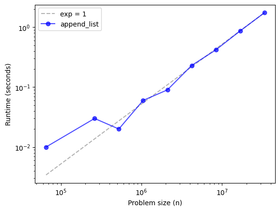
For small values of n, the runtime is so short that we’re probably not getting an accurate measurement of just the operation we’re interested in. But as n increases, runtime seems to converge to a line with slope 1.
That suggests that performing append n times is linear, which suggests that a single append is constant time.
list.pop#
Now let’s try that with pop, and specifically with pop(0), which pops from the left side of the list.
def pop_left_list(n):
t= []
for i in range(n):
t.append(i)
for _ in range(n):
t.pop(0)
return t
ns, ts = run_timing_test(pop_left_list)
plot_timing_test(ns, ts, 'pop_left_list', exp=1)
1024 0.0
2048 0.0
4096 0.0
8192 0.010000000000001563
16384 0.030000000000001137
32768 0.0799999999999983
65536 0.41000000000000014
131072 1.7600000000000016
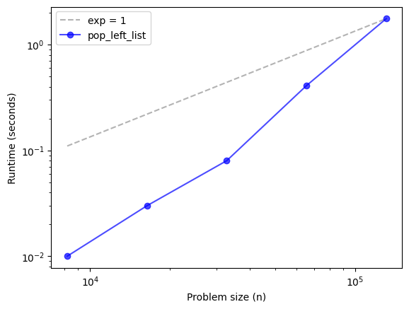
That doesn’t look very good. The runtimes increase more steeply than the line with slope 1. Let’s try slope 2.
plot_timing_test(ns, ts, 'pop_left_list', exp=2)
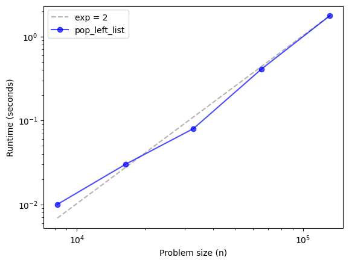
The last few points converge on the line with slope 2, which suggests that pop(0) is quadratic.
Exercise: What happens if you pop from the end of the list? Write a function called pop_right_list that pops the last element instead of the first. Use run_timing_test to characterize its performance. Then use plot_timing_test with a few different values of exp to find the slope that best matches the data. What conclusion can you draw about the order of growth for popping an element from the end of a list?
# Solution
def pop_right_list(n):
t= []
for i in range(n):
t.append(i)
for _ in range(n):
t.pop(-1)
return t
ns, ts = run_timing_test(pop_right_list)
plot_timing_test(ns, ts, 'pop_right_list', exp=1)
1024 0.0
2048 0.0
4096 0.0
8192 0.00999999999999801
16384 0.0
32768 0.00999999999999801
65536 0.020000000000003126
131072 0.00999999999999801
262144 0.020000000000003126
524288 0.04999999999999716
1048576 0.10000000000000142
2097152 0.17999999999999972
4194304 0.389999999999997
8388608 0.7700000000000031
16777216 1.4999999999999964
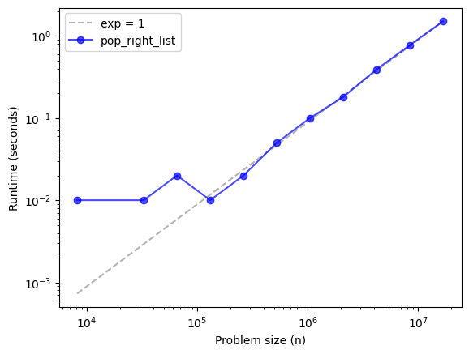
Sorting#
We expect sorting to be n log n. On a log-log scale, that doesn’t look like a straight line, so there’s no simple test whether it’s really n log n. Nevertheless, we can plot results for sorting lists with different lengths, and see what it looks like.
def sort_list(n):
t = np.random.random(n)
t.sort()
return t
ns, ts = run_timing_test(sort_list)
plot_timing_test(ns, ts, 'sort_list', exp=1)
1024 0.0
2048 0.0
4096 0.0
8192 0.0
16384 0.0
32768 0.00999999999999801
65536 0.0
131072 0.010000000000005116
262144 0.01999999999999602
524288 0.03999999999999915
1048576 0.09000000000000341
2097152 0.17999999999999972
4194304 0.36999999999999744
8388608 0.7800000000000011
16777216 1.6099999999999994
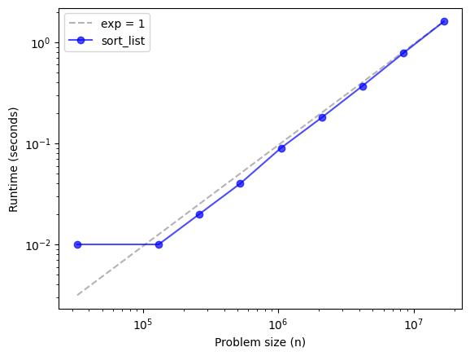
It sure looks like sorting is linear, so that’s surprising. But remember that log n changes much more slowly than n. Over a wide range of values, n log n can be hard to distinguish from an algorithm with linear growth. As n gets bigger, we would expect this curve to be steeper than slope 1. But often, for practical problem sizes, n log n is as good as linear.
Bisection search#
We expect bisection search to be log n, which is so fast it is hard to measure the way we’ve been doing it.
To make it work, I create the sorted list ahead of time and use the parameter hi to specify which part of the list to search. Also, I have to run each search 100,000 times so it takes long enough to measure.
t = np.random.random(2**24)
t.sort()
from bisect import bisect
def search_sorted_list(n):
for i in range(100000):
index = bisect(t, 0.1, hi=n)
return index
ns, ts = run_timing_test(search_sorted_list, max_n=2**24)
plot_timing_test(ns, ts, 'search_sorted_list', exp=1)
1024 0.07000000000000028
2048 0.06999999999999318
4096 0.07000000000000028
8192 0.0800000000000054
16384 0.0799999999999983
32768 0.0899999999999963
65536 0.09000000000000341
131072 0.10000000000000142
262144 0.10000000000000142
524288 0.10999999999999943
1048576 0.10999999999999943
2097152 0.12999999999999545
4194304 0.14000000000000057
8388608 0.14000000000000057
16777216 0.14000000000000057
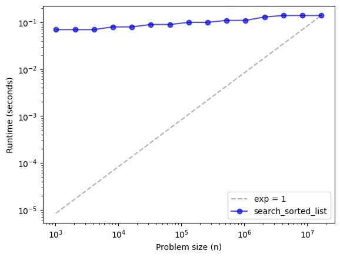
It looks like the runtime increases slowly as n increases, but it’s definitely not linear. To see if it’s constant time, we can compare it to the line with slope 0.
plot_timing_test(ns, ts, 'search_sorted_list', exp=0)
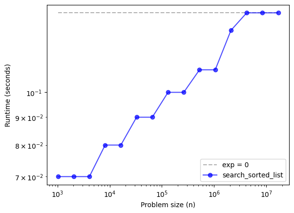
Nope, looks like it’s not constant time, either. We can’t really conclude that it’s log n based on this curve alone, but the results are certainly consistent with that theory.
Dictionary methods#
Exercise: Write methods called add_dict and lookup_dict, based on append_list and pop_left_list. What is the order of growth for adding and looking up elements in a dictionary?
# Solution
def add_dict(n):
d = {}
for i in range(n):
d[i] = 1
return d
ns, ts = run_timing_test(add_dict)
plot_timing_test(ns, ts, 'add_dict', exp=1)
1024 0.0
2048 0.0
4096 0.0
8192 0.0
16384 0.010000000000005116
32768 0.0
65536 0.0
131072 0.00999999999999801
262144 0.01999999999999602
524288 0.03999999999999915
1048576 0.0800000000000054
2097152 0.1799999999999926
4194304 0.3400000000000105
8388608 0.6799999999999926
16777216 1.3699999999999974
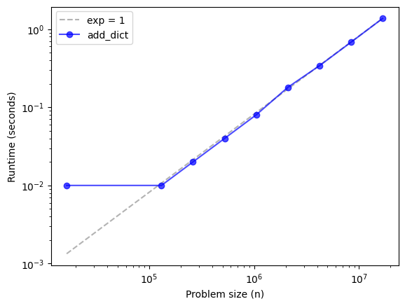
# Solution
def lookup_dict(n):
d = {}
for i in range(n):
d[i] = 1
total = 0
for i in range(n):
total += d[i]
return d
ns, ts = run_timing_test(lookup_dict)
plot_timing_test(ns, ts, 'lookup_dict', exp=1)
1024 0.0
2048 0.0
4096 0.0
8192 0.0
16384 0.00999999999999801
32768 0.0
65536 0.00999999999999801
131072 0.00999999999999801
262144 0.030000000000001137
524288 0.07000000000000028
1048576 0.13000000000000256
2097152 0.28999999999999915
4194304 0.5700000000000003
8388608 1.1400000000000006
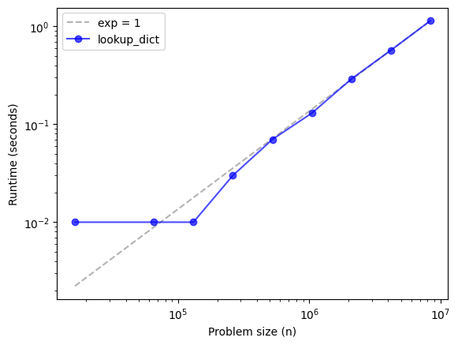
# Solution
# Adding `n` elements to a dictionary takes linear time,
# so adding a single element is constant time.
# Same with looking up `n` elements.
Implementing a hash table#
The reason Python dictionaries can add and look up elements in constant time is that they are based on hash tables. In this section, we’ll implement a hash table in Python. Remember that this example is for educational purposes only. There is no practical reason to write a hash table like this in Python.
We’ll start with a simple linear map, which is a list of key-value pairs.
class LinearMap(object):
"""A simple implementation of a map using a list of tuples
where each tuple is a key-value pair."""
def __init__(self):
self.items = []
def add(self, k, v):
"""Adds a new item that maps from key (k) to value (v).
Assumes that they keys are unique."""
self.items.append((k, v))
def get(self, k):
"""Looks up the key (k) and returns the corresponding value,
or raises KeyError if the key is not found."""
for key, val in self.items:
if key == k:
return val
raise KeyError
First let’s make sure it works:
def test_map(m):
s = string.ascii_lowercase
for k, v in enumerate(s):
m.add(k, v)
for k in range(len(s)):
print(k, m.get(k))
m = LinearMap()
test_map(m)
0 a
1 b
2 c
3 d
4 e
5 f
6 g
7 h
8 i
9 j
10 k
11 l
12 m
13 n
14 o
15 p
16 q
17 r
18 s
19 t
20 u
21 v
22 w
23 x
24 y
25 z
Now let’s see how long it takes to add n elements.
def add_linear_map(n):
d = LinearMap()
for i in range(n):
d.add(i, 1)
return d
ns, ts = run_timing_test(add_linear_map)
plot_timing_test(ns, ts, 'add_linear_map', exp=1)
1024 0.0
2048 0.0
4096 0.00999999999999801
8192 0.0
16384 0.0
32768 0.00999999999999801
65536 0.010000000000005116
131072 0.02999999999999403
262144 0.05000000000000426
524288 0.09999999999999432
1048576 0.20000000000000284
2097152 0.4100000000000037
4194304 0.8099999999999952
8388608 1.6000000000000014
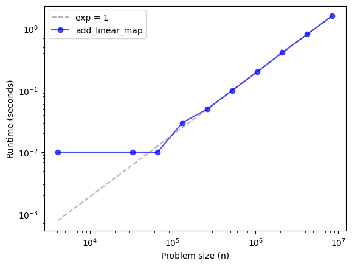
Adding n elements is linear, so each add is constant time. How about lookup?
def lookup_linear_map(n):
d = LinearMap()
for i in range(n):
d.add(i, 1)
total = 0
for i in range(n):
total += d.get(i)
return d
ns, ts = run_timing_test(lookup_linear_map)
plot_timing_test(ns, ts, 'lookup_linear_map', exp=2)
1024 0.00999999999999801
2048 0.05000000000000426
4096 0.3200000000000003
8192 0.9199999999999946
16384 3.6500000000000057
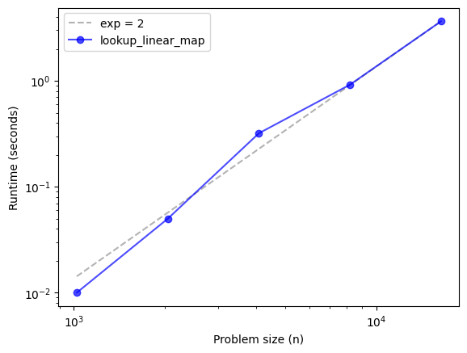
Looking up n elements is \(O(n^2)\) (notice that exp=2). So each lookup is linear.
Let’s see what happens if we break the list of key-value pairs into 100 lists.
class BetterMap(object):
"""A faster implementation of a map using a list of LinearMaps
and the built-in function hash() to determine which LinearMap
to put each key into."""
def __init__(self, n=100):
"""Appends (n) LinearMaps onto (self)."""
self.maps = []
for i in range(n):
self.maps.append(LinearMap())
def find_map(self, k):
"""Finds the right LinearMap for key (k)."""
index = hash(k) % len(self.maps)
return self.maps[index]
def add(self, k, v):
"""Adds a new item to the appropriate LinearMap for key (k)."""
m = self.find_map(k)
m.add(k, v)
def get(self, k):
"""Finds the right LinearMap for key (k) and looks up (k) in it."""
m = self.find_map(k)
return m.get(k)
m = BetterMap()
test_map(m)
0 a
1 b
2 c
3 d
4 e
5 f
6 g
7 h
8 i
9 j
10 k
11 l
12 m
13 n
14 o
15 p
16 q
17 r
18 s
19 t
20 u
21 v
22 w
23 x
24 y
25 z
The run time is better (we get to a larger value of n before we run out of time).
def lookup_better_map(n):
d = BetterMap()
for i in range(n):
d.add(i, 1)
total = 0
for i in range(n):
total += d.get(i)
return d
ns, ts = run_timing_test(lookup_better_map)
plot_timing_test(ns, ts, 'lookup_better_map', exp=1)
1024 0.010000000000005116
2048 0.0
4096 0.00999999999999801
8192 0.01999999999999602
16384 0.0800000000000054
32768 0.25
65536 0.9899999999999949
131072 4.700000000000003
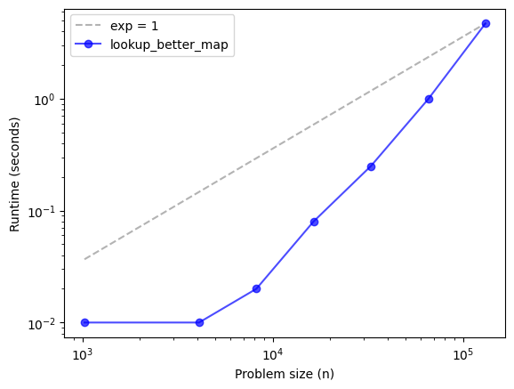
The order of growth is hard to characterize. It looks steeper than the line with slope 1. Let’s try slope 2.
plot_timing_test(ns, ts, 'lookup_better_map', exp=2)
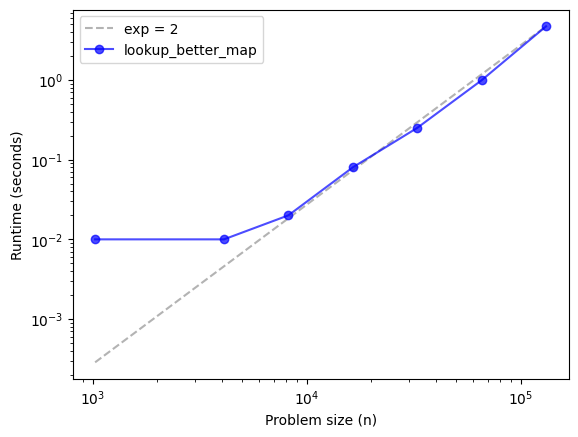
It might be converging to the line with slope 2, but it’s hard to say anything conclusive without running larger problem sizes.
Exercise: Go back and run run_timing_test with a larger value of max_time and see if the run time converges to the line with slope 2. Just be careful not to make max_time to big.
Now we’re ready for a complete implementation of a hash map.
class HashMap(object):
"""An implementation of a hashtable using a BetterMap
that grows so that the number of items never exceeds the number
of LinearMaps.
The amortized cost of add should be O(1) provided that the
implementation of sum in resize is linear."""
def __init__(self):
"""Starts with 2 LinearMaps and 0 items."""
self.maps = BetterMap(2)
self.num = 0
def get(self, k):
"""Looks up the key (k) and returns the corresponding value,
or raises KeyError if the key is not found."""
return self.maps.get(k)
def add(self, k, v):
"""Resize the map if necessary and adds the new item."""
if self.num == len(self.maps.maps):
self.resize()
self.maps.add(k, v)
self.num += 1
def resize(self):
"""Makes a new map, twice as big, and rehashes the items."""
new_map = BetterMap(self.num * 2)
for m in self.maps.maps:
for k, v in m.items:
new_map.add(k, v)
self.maps = new_map
m = HashMap()
test_map(m)
0 a
1 b
2 c
3 d
4 e
5 f
6 g
7 h
8 i
9 j
10 k
11 l
12 m
13 n
14 o
15 p
16 q
17 r
18 s
19 t
20 u
21 v
22 w
23 x
24 y
25 z
Exercise: Write a function called lookup_hash_map, based on lookup_better_map, and characterize its run time.
If things go according to plan, the results should converge to a line with slope 1. Which means that n lookups is linear, which means that each lookup is constant time. Which is pretty much magic.
# Solution
def lookup_hash_map(n):
d = HashMap()
for i in range(n):
d.add(i, 1)
total = 0
for i in range(n):
total += d.get(i)
return d
ns, ts = run_timing_test(lookup_hash_map)
plot_timing_test(ns, ts, 'lookup_hash_map', exp=1)
1024 0.0
2048 0.09000000000000341
4096 0.009999999999990905
8192 0.01999999999999602
16384 0.1700000000000017
32768 0.21999999999999886
65536 0.5600000000000023
131072 0.8499999999999943
262144 1.75
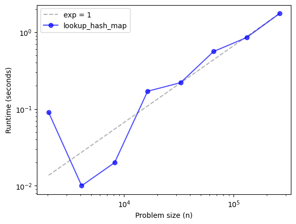